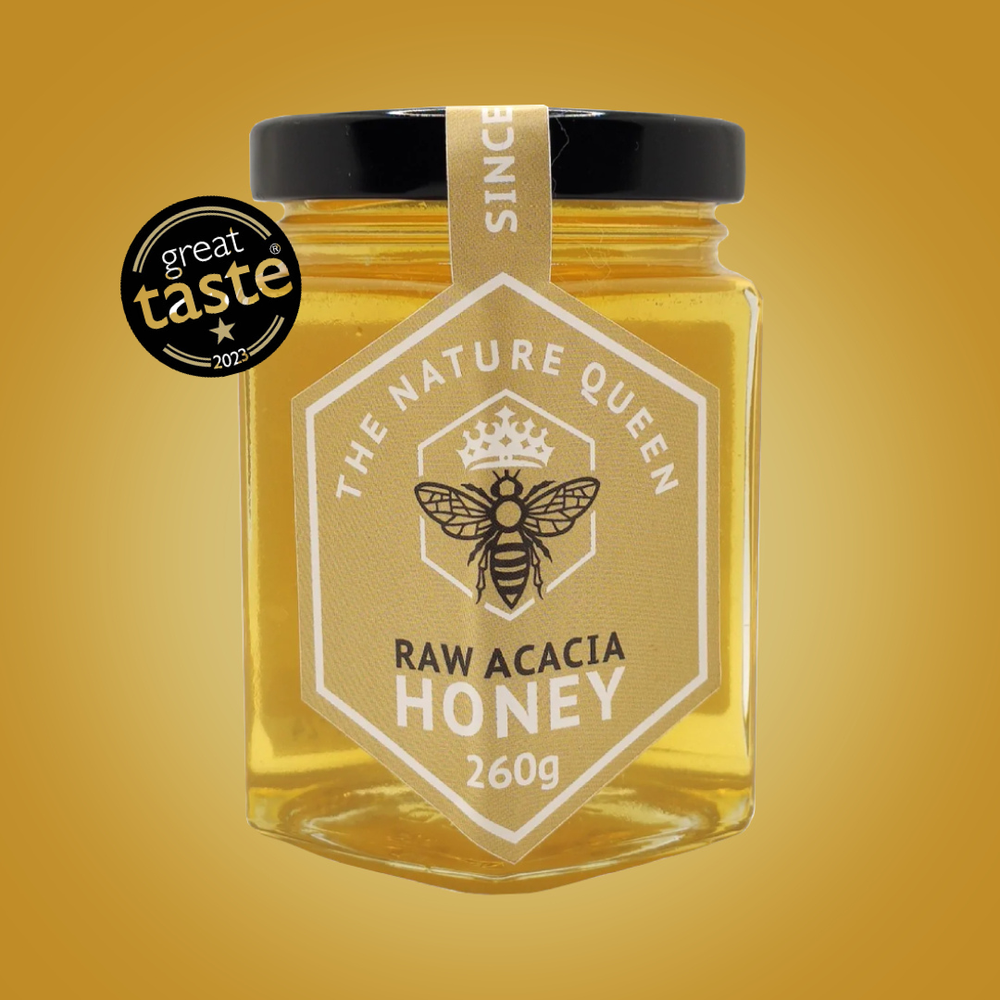

Cuando el periodista Marcos Fuentes viajó a un pequeño pueblo de la sierra de Gredos para hacer un reportaje sobre apicultura tradicional, no esperaba encontrar nada fuera de lo común. Pero lo que descubrió en la finca de Aurelio, un apicultor de 84 años, lo dejó sin palabras.
Aurelio recordaba con precisión fechas, nombres y detalles de conversaciones de hace décadas. "Tiene una memoria prodigiosa", cuenta Marcos. "Le pregunté cuándo había nacido su primer nieto y me dijo la hora exacta, el día de la semana y hasta el tiempo que hacía."
"Llevo cuarenta años haciendo lo mismo cada mañana. Mi padre me lo enseñó, y el padre de mi padre también lo hacía. Nunca he necesitado que me recuerden nada."— Aurelio, apicultor, 84 años, Ávila
Cuando Marcos le preguntó cuál era su secreto, Aurelio sonrió y señaló sus colmenas. "Está todo ahí dentro", dijo. Pero se negó a dar más detalles ese día. Solo dijo que era algo que "la gente de ciudad ha olvidado hace mucho tiempo".
⏱ Acceso gratuito · Disponible solo por tiempo limitado
Lo que más llamó la atención de Marcos no fue solo la memoria de Aurelio, sino su energía. "Se movía por la finca como si tuviera 50 años", recuerda. "Cargaba colmenas, subía escaleras, recordaba el nombre de cada uno de sus nietos y bisnietos."
Las abejas producen una variedad de sustancias naturales que llevan siglos siendo estudiadas por sus propiedades únicas. Lo fascinante es que la combinación de estas sustancias — en proporciones específicas y en el momento correcto — puede tener efectos muy distintos a los de cada una por separado. Eso es precisamente lo que hace especial al hábito de Aurelio.

El secreto de Aurelio viene directamente de sus colmenas — y está disponible para cualquiera.
Meses después de publicar el reportaje, Marcos recibió decenas de mensajes de lectores que habían investigado por su cuenta y encontrado un vídeo donde todo se explica con detalle: el hábito completo, los ingredientes, las proporciones y el método exacto que Aurelio lleva décadas practicando.
"Cuando vi el vídeo entendí todo. Es tan sencillo que da rabia no haberlo sabido antes. Y lo mejor es que cualquiera puede hacerlo desde casa."— Testimonio de lector, 69 años, Sevilla
El vídeo está disponible de forma gratuita, pero solo por tiempo limitado. Explica paso a paso todo lo que Aurelio hace cada mañana — sin rodeos, sin tecnicismos, de forma que cualquier persona mayor de 60 años pueda entenderlo y aplicarlo.
"Mi hija me mandó el enlace del vídeo. Al principio lo vi con escepticismo, pero lo que explican tiene todo el sentido del mundo. Decidí probarlo y no me arrepiento. Lo recomiendo a cualquiera que tenga más de 60."
Si tienes más de 55 años, no dejes pasar la oportunidad de ver este vídeo antes de que deje de estar disponible. El acceso es completamente gratuito y en menos de una hora tendrás toda la información que necesitas.
🔒 Acceso gratuito · Disponible por tiempo limitado